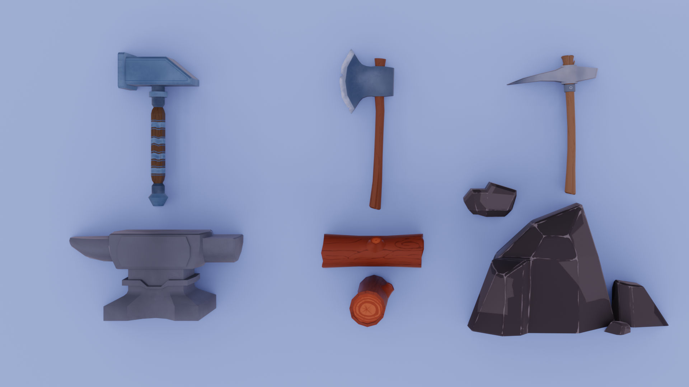
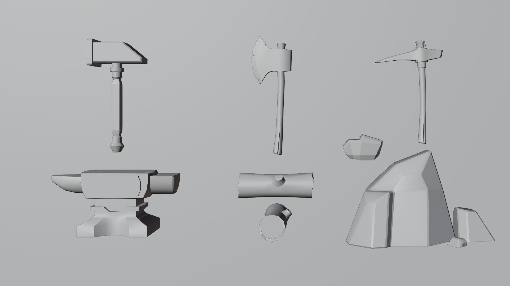
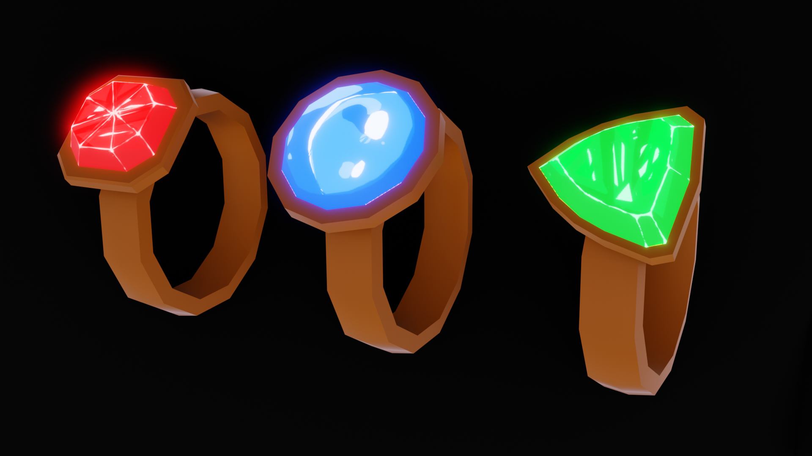
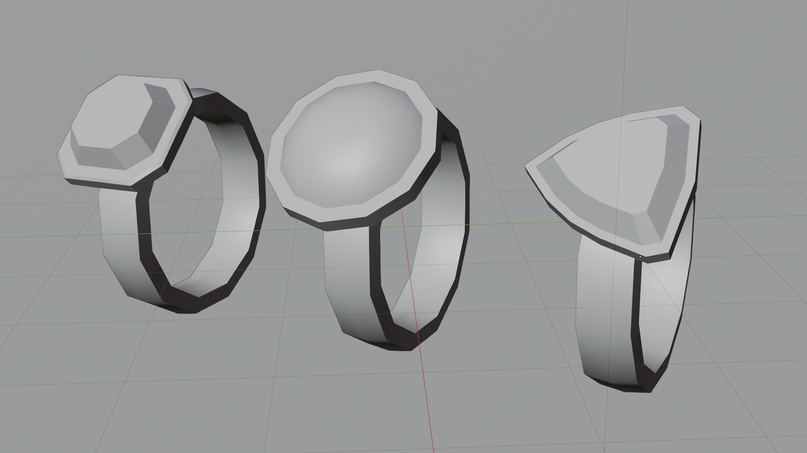
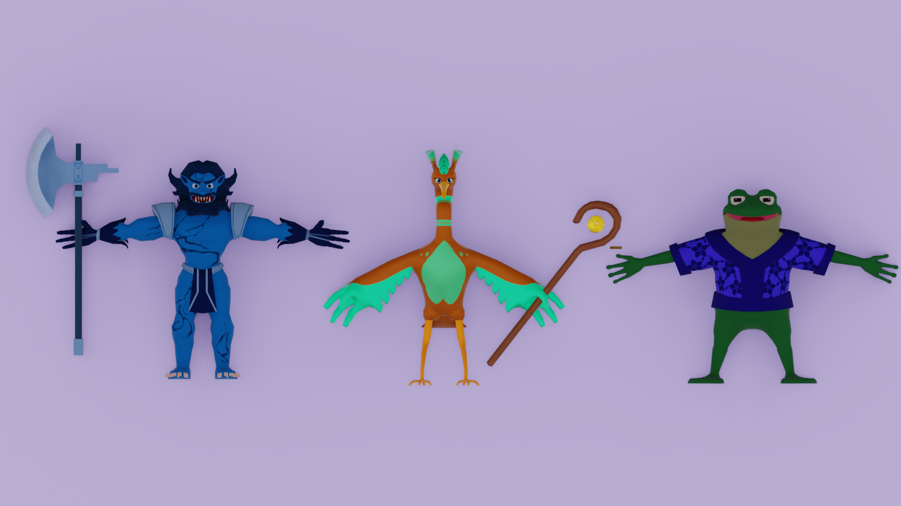
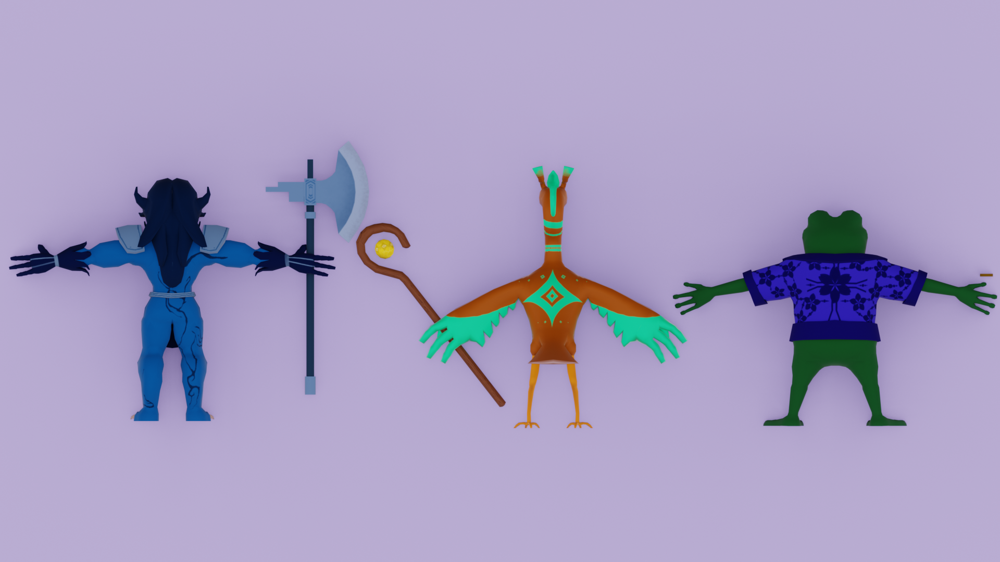
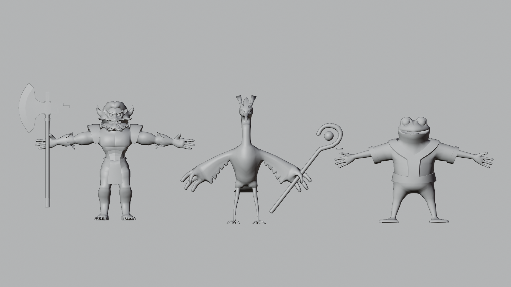
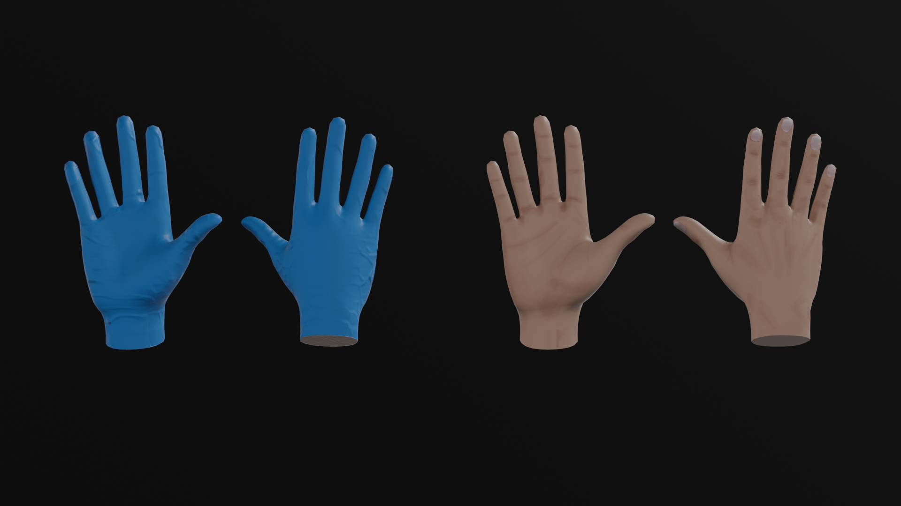
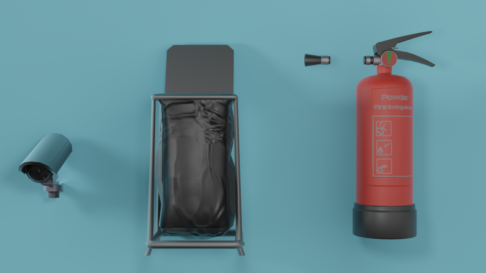
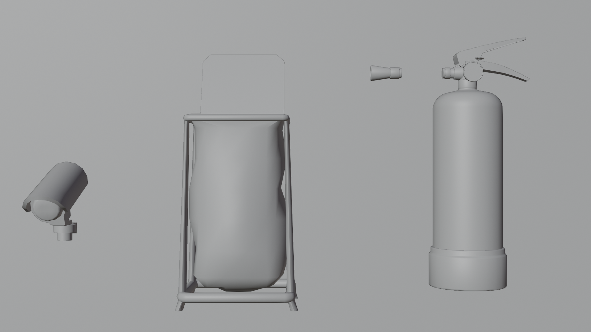

Textures
Tool: Substance Painter
Stylised
Stylised
      
Textures were made for a VR game during my 2 months internship as a texturer trainee. The goal was to keep stylished look with simple colors
The models were made and provided by Jaro Virta.
Realistic

Textures for hands used in VR. Created for standalone Nurse Calculation VR application.
 Couple of textures created for standalone VR fire extinguisher application